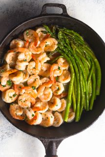

Garlic Shrimp Asparagus Skillet

Perfectly cooked Garlic Shrimp Asparagus Skillet
This recipe will show you how to make irresistible Garlic Shrimp Asparagus Skillet
Ingredients
- 1 lb uncooked extra-large shrimp
- kosher salt and fresh ground pepper
- 1/4 tsp red pepper flakes
- 1 tsp onion powder
- 3 TBS butter/olive oil
- 3 cloves garlic, minced
- 2 cups mushrooms
- 1 bunch asparagus
- 1 TBS parsley
Steps
- In a bowl, add the shrimp, salt, pepper, red pepper flakes, and onion
powder. Mix everythin well.
- In a skillet, add 2 TBS butter or olive oil over medium heat.
- Add the garlic, add saute for 30 sec. Add the shrimp and saute for about 4 min or until
the shrimp are cooked through. Set aside.
- In the same skillet, add 1 TBS of olive oil or butter
Home